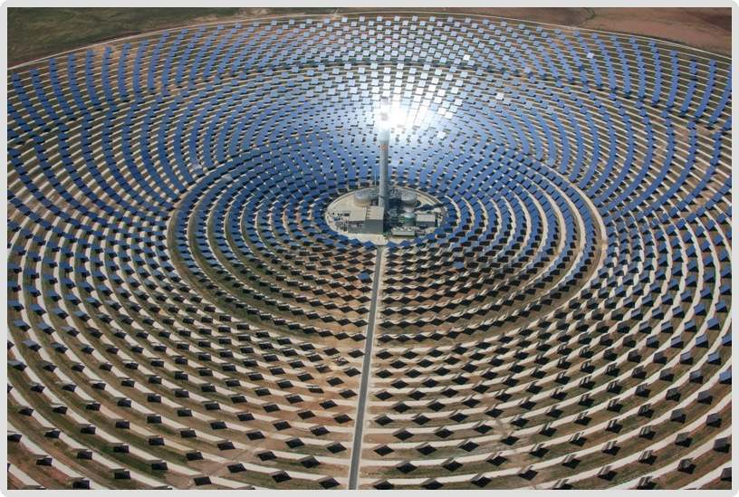
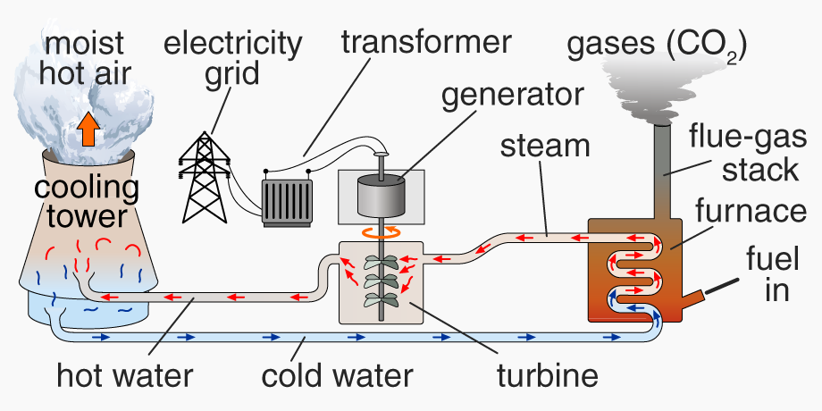
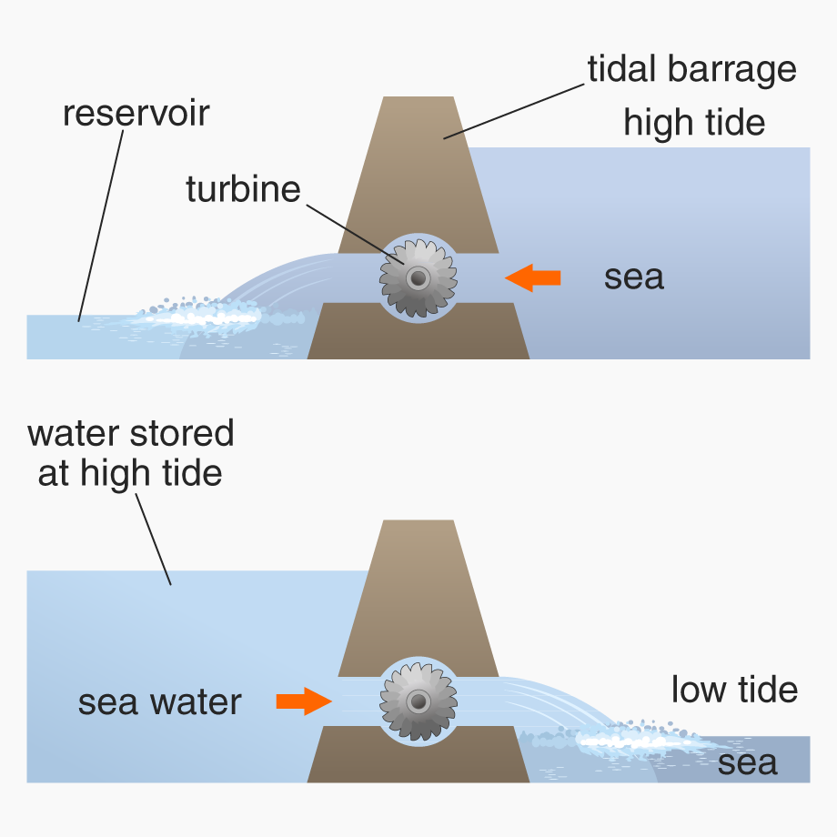
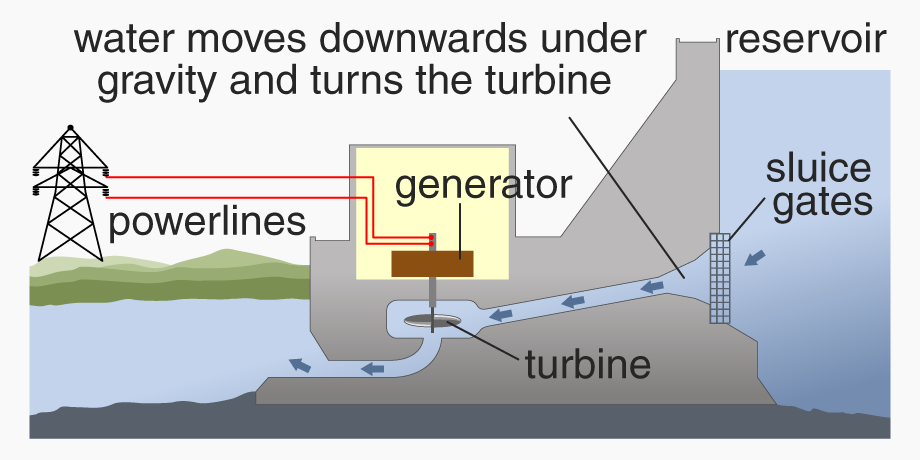
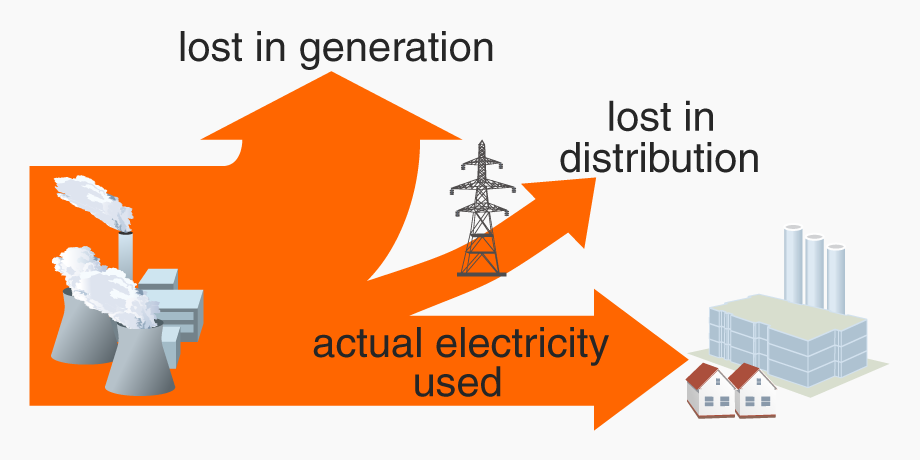

The energy we use in everyday life comes from a number of different original sources. These sources are either renewable or non-renewable (sustainable or unsustainable energy).
A renewable energy source is one that is replenished by nature. These include: solar energy; hydroelectric energy; tidal, wave and wind energy; geothermal energy, biofuels. They are all primary energy sources because they are natural.

The Gemasolar power plant in Spain uses mirrors to reflect the Sun’s radiation onto a central tower. The rays heat molten salts that generate water vapour to turn turbines
A non-renewable energy source is one that may run out if used over a long period of time. This energy comes from minerals, e.g. uranium and plutonium, and fossil fuels such as coal, petroleum/oil, natural gas.
Advantages and disadvantages of non-renewable energy sources:
Advantages
Disadvantages
Coal: cheap to extract; produces lots of electricity; plentiful supply (for at least 150 years).
Pollutes with smoke and dust; emits greenhouse gases (GHGs) like CO2; emit SO2 and NO2 which cause acid rain; will eventually run out.
Natural gas and oil: again relatively cheap to extract (value for money), and produce less CO2 than coal.
Still cause some pollution, e.g. NO2; will eventually run out, and probably before coal.
Nuclear power: energy produced is thousands of times more per kg than fossil fuels; does not produce CO2/GHGs (releases energy without any burning); low risk of accident if the plant is commissioned (planned/built) properly.
Commissioning / decommissioning costs are very high and nuclear power stations take a long time to build; nuclear waste remains radioactive for millions of years and must be disposed of very carefully to avoid leakage; there is a risk of nuclear accident leading to contamination and irradiation.
Advantages and disadvantages of renewable energy sources:
Advantages
Disadvantages
Generally: They are clean, non-polluting energy, producing no GHGs, no acid rain, no radioactive waste.
Generally: the total energy they can supply is lower than fossil fuels; initial commissioning costs can be high (e.g. deep drilling for geothermal power plants); they may disturb plant and animal habitats; they can be eyesores.
Solar cells (photovoltaic): Can be used as a direct electricity supply for a remote place such as a mountain hut.
Expensive to install; inefficient (only convert a small percentage of the Sun’s energy); work best in strong direct sunlight, e.g. in the summer or in places with year-round sunshine.
Wind, wave, tidal power: Permanent and renewable
forces of nature …
… but varied and unreliable: the amount of energy produced depends on the strength of the winds, waves and tides.
Biofuels: Readily available from natural sources, e.g. methane from manure, ethanol from fermented sugar.
To be classed as a renewable, a positive balance needs to be struck between the CO2 they take out of the atmosphere when growing (e.g. sugar cane) and the CO2 they put back in when they are burned.
Carbon capture: A new development. CO2 could be captured in power stations before it escapes into the atmosphere; it may then be pumped into depleted underground oil/gas chambers to seal it safely away.
Generating electricity
There are several types of electricity generating power stations; these often use turbines to power generators. Our core energy demands still rely on these traditional stations, which use fossil fuels to produce steam to drive the turbines.

General diagram of a fossil fuel power station. Note that power stations cannot be 100% efficient: they lose energy as heat in the cooling tower and gas stack
Wind and wave power: Wind turbines are driven directly by the flow of air on the blades; the up and down movement of waves can turn a generator in a buoyancy chamber.
Hydroelectric and tidal power: rainwater can be stored in a reservoir to drive generators under a dam (but in times of low rainfall these power stations are less effective); high and low tides near the sea can also generate electricity using a dam:

A tidal power generator works cyclically with the rising and falling tide

A hydroelectric power station harnesses the enormous power of millions of gallons of water falling under gravity
Nuclear power: Uranium atoms are unstable – they split, releasing heat. The energy from these fission reactions heats water to make steam to drive turbines. The uranium fuel eventually will split no more and leaves behind dangerous waste.
Geothermal power: Rocks deep beneath the ground (often in volcanic areas) become hot from radioactive substances. Cold water pumped down to the rock turns to steam; this is carried back up to drive turbines.
Start-up times (AQA): store extra energy in an efficient way. Water is sent to a higher reservoir using cheap off-peak energy. It can then be used to produce normal hydroelectricity when demand is high.
Electricity companies therefore use a combination of different power sources at different times of day to meet peaks and troughs in demand, and to try to achieve efficiencies. For example, gas-powered stations can be used for peak supply because of their fast start-up times.
Nevertheless, electricity generation and distribution as a whole is not especially efficient, even today:
